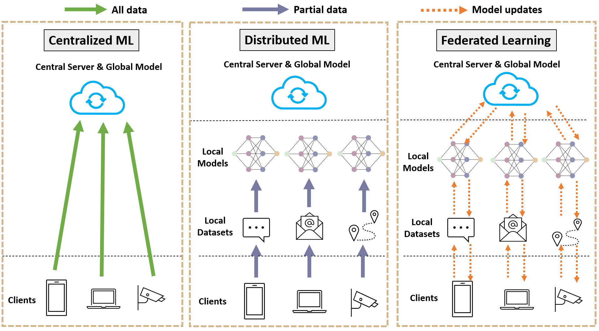
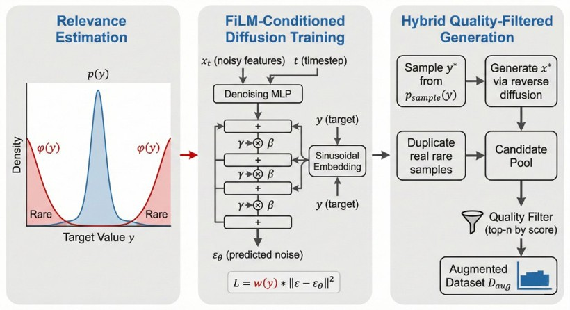

Our mission is to bridge the reliability gap in modern AI by addressing data scarcity, decentralization, and governance challenges through rigorous statistical optimization.

Pillar 01
Federated Learning & Privacy
"Data is never identical."
Real-world Federated Learning faces massive performance drops because local datasets are highly skewed (Non-IID). We develop robust statistical frameworks to bridge this gap, ensuring that global models remain representative and secure without ever touching raw private data.
Featured Publication
Optimizing federated learning: Addressing key challenges in real-world applications
IEEE Internet of Things Journal, 2025
Pillar 02
Imbalanced Statistical Learning
"Focusing on the high-impact outliers."
Standard models are inherently biased towards the majority. We utilize high-fidelity synthetic data generation to enhance imbalanced regression (IR), preventing critical rare events from being treated as noise and ensuring robust performance in the "long-tail" of data distribution.
Featured Publication
Calibrated mixup for imbalanced regression on tabular data
Pattern Recognition, 2025

Pillar 03
AI Alignment & Safety Governance
"Securing trustworthy intelligence."
Governance cannot keep pace with AI velocity. We propose auditing frameworks for AI in the public sector and novel privacy matrices for LLMs, ensuring that as models grow more powerful, they remain aligned with human values and organizational data privacy standards.